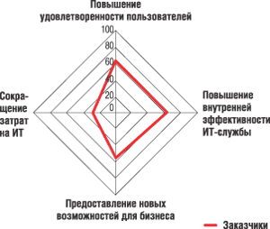
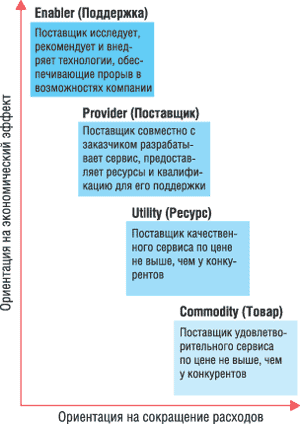
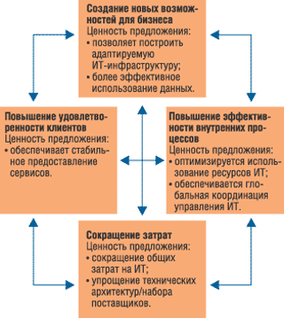

Андрей Колесов
Управление ИТ-инфраструктурой предприятий - традиционная для корпорации IBM сфера деятельности, и велась она в двух основных направлениях. Первое - это комплекс программных решений IBM Tivoli, один из пяти ключевых софтверных брэндов "Голубого гиганта", где основной акцент делается на автоматизацию управления вычислительными ресурсами компаний. Сегодня в дополнение к трем традиционным направлениям Tivoli - управление системами, управление безопасностью и управление хранением данных - IBM быстро наращивает усилия по формированию пакета программных продуктов для управления ИТ-услугами (IBM Tivoli IT Service Management).
Второе направление - это предоставление ИТ-услуг заказчикам; для этого в корпорации существует подразделение IBM Global Services (IBM GS). В России с работой этой структуры знаком пока довольно узкий круг организаций, и потому даже многие ИТ-специалисты в нашей стране искренне удивляются, узнав, что на долю Global Services приходится половина доходов корпорации*. Хотя, зная историю IBM, удивляться тут нечему: первые десять лет работы на компьютерном рынке (до 1956 г.) корпорация зарабатывала деньги только на услугах (компьютеры не продавались, а предоставлялись клиентам в аренду), а продажи ПО в качестве самостоятельных продуктов начались только в 1969 г.
* Вот как распределялись доходы IBM по отдельным направлениям по итогам 2004 г.: Global Services - 46,4 млрд долл., аппаратное обеспечение - 31,6 млрд долл., ПО - 15,1 млрд долл.
Деятельность IBM GS охватывает четыре основных направления: Business Consulting Services (бизнес-консалтинг), Integrated Technology Services (ИТ-консалтинг), Strategic Outsourcing Services (аутсорсинг) и Learning Services (обучение). Однако почти все они в той или иной степени связаны с поддержкой и развитием ИТ-инфраструктуры заказчиков. Тут также можно выделить два аспекта работы: с одной стороны, это предоставление собственно ИТ-услуг по схеме аутсорсинга, с другой - консалтинг, касающийся организации информационных систем (ИС) предприятий и создания внутренних ИТ-служб. Вполне очевидно, что, занимаясь этим, корпорация формировала собственную методологию управления ИТ-инфраструктурой, которая сегодня представлена в виде законченной концепции IBM IT Optimization Services ("Службы оптимизации ИТ-инфраструктуры").
Оптимизация ИТ-инфраструктуры - время подошло
О необходимости оптимизации ИТ-управления в целом говорит наличие целого комплекса проблем, а именно:
- неудовлетворенность пользователей качеством информационных услуг;
- неудовлетворенность руководства высокими и непрозрачными расходами на ИТ;
- "зоопарк" технических и программных средств, переработка ИТ-специалистов, постоянный дефицит средств и кадров;
- трудности с выбором и обоснованием направлений и конкретных проектов развития имеющихся ИС.
Большинство организаций уже вложили в свою информатизацию существенные средства и начинают все больше зависеть от своих ИС, которые часто становятся узким местом. Как и везде, в ИТ существует конфликт между расходами и ожидаемыми результатами. С одной стороны, используемые ИТ должны соответствовать ожиданиям бизнеса и открывать для него новые возможности, но в то же время желательно снизить затраты на ИТ, повысить их эффективность и прозрачность.
Исследование, проведенное среди российских корпоративных заказчиков в начале 2005 г., в целом подтверждает эти положения (рис. 1) и демонстрирует еще целый ряд интересных результатов. Например, выяснилось, что на многих российских предприятиях за последнее время проходили существенные изменения в ИТ-службе или в самой организации: респонденты отмечали изменения в оргструктуре ИТ-службы (70%), внедрение сложных технологий (55%), появление новых направлений бизнеса (55%), а также слияния и поглощения (42%). Российские предприятия наиболее заинтересованы в оптимизации таких составляющих ИС, как процессы в ИТ (59%), ИТ-стратегия (52%), безопасность ИТ (52%), оргструктура ИТ-службы (47%).
|  | Рис. 1. Оценка значимости различных критериев для ИТ-службы.
|
Факторы, способствующие оптимизации ИТ-инфраструктуры
|
Для оценки зрелости ИТ-службы компания Gartner предлагает использовать классификацию, представленную в табл. 1. Нетрудно заметить естественную связь данной классификации с более общими вопросами управления качеством работы предприятия в целом. В частности, можно провести аналогию с моделью оценки качества CMM (Capability Maturity Model - модель уровня зрелости), созданной в первую очередь для ИТ-компаний, которая также включает пять уровней зрелости.
Таблица 1. Классификация зрелости ИТ-служб компаний (по Gartner)
| Уровень | Содержание процессов |
| 0. Хаотичный | Множественные службы поддержки, неразвитая служба эксплуатации |
| 1. Реактивный | Отслеживание событий, наличие единой консоли и службы поддержки. Управление топологией сети. Выполнение резервного копирования и инвентаризации |
| 2. Проактивный | Управление производительностью, изменениями, проблемами, конфигурациями, доступностью. Автоматизация, планировщики заданий |
| 3. Сервис | Планирование нагрузок и емкостей, управление уровнями обслуживания |
| 4. Польза | Связь ИТ и бизнес-метрик |
У многих организаций (и даже у разных отделений внутри корпораций) есть свое понимание эффективности ИТ и задач ИТ-отдела. Эти, иногда противоречивые, требования важно учитывать при разработке правильной стратегии оптимизации. IBM GS выделяет четыре различных подхода к ИТ, которые можно описать с помощью четырех профилей (рис. 2).
|  | Рис. 2. Типовые профили эффективности ИТ-систем.
|
Commodity (Товар). Предприятие рассматривает ИТ-сервисы как свои основные инвестиции для автоматизации фундаментальных административных функций с минимальными расходами. При оптимизации ИТ в организациях с таким профилем основное внимание уделяется сокращению расходов.
Utility (Ресурс). Компании, изначально сфокусированные на расходах, но признающие важность построения отношений с клиентами. Для этих предприятий оптимизация ИТ служит средством исполнения соглашений об уровне сервиса, сокращения времени реагирования, готовности и других параметров, связанных с обслуживанием клиентов.
Partner (Партнер). Организация рассматривает ИТ на уровне бизнеса. Хотя сокращение расходов всегда актуально, основное внимание уделяется получению экономического эффекта от инвестиций в ИТ. В этих ситуациях бизнес-подразделения вместе с ИТ-отделом работают над улучшением общего качества сервиса и достижением конечных целей деятельности компании.
Enabler (Поддержка). В компаниях данного профиля ИТ служит важным элементом стратегии развития бизнеса. ИТ-инициативы в них выступают основной движущей силой развития бизнеса и рассматриваются как необходимое условие конкурентоспособности.
Главная проблема при выборе способа оптимизации заключается в том, что во многих ситуациях от ИТ-службы требуют учитывать аспекты всех перечисленных выше профилей, исходя из разных требований разных подразделений. Понимание этих отличий, способность находить баланс между ними, определять их приоритеты становятся критическим фактором при правильном выборе подхода к оптимизации.
Когда нужно оптимизировать ИТОптимизация ИТ-инфраструктуры наиболее эффективна для достаточно больших организаций. Если ваша компания удовлетворяет любым шести из восьми перечисленных ниже критериев, то вам нужно заняться этой работой. Критерии эти таковы:
|
Методика оптимизации ИТ по IBM
Корпорация IBM разработала технологию оптимизации ИТ-инфраструктуры на базе многочисленных консалтинговых проектов, выполненных сотрудниками IBM Global Services. Она представляет собой синтез других методик, разработанных в IBM (IT Process Model, IBM Global Service Method и т. д.), и опирается на лучшие мировые практики - ITIL, PMI, SWOT-анализ.
Основная идея комплексной оптимизации информационной системы состоит в том, чтобы выбрать наилучший баланс между затратами организации на ИТ (т. е. снижением прямых финансовых затрат и повышением эффективности ИТ-службы) и выгодами от них для основной деятельности компании (новые возможности для развития бизнеса, повышение производительности труда и уровня удовлетворенности пользователей). Основные положения этой методики таковы:
- предоставление рекомендаций и инструментов для оценки и преобразования ИТ-среды, что облегчает переход к электронному бизнесу;
- внедрение новых моделей бизнеса и технологии с увеличением прибыли и улучшением эффективности;
- оптимизация отдачи от инвестиций в ИТ за счет расширения преимуществ и сокращения совокупных затрат на ИТ;
- использование всех возможностей и сервисов, предлагаемых IBM Global Services.
Конкретная же работа ведется в следующих направлениях.
Управление расходами. Сокращение затрат на ИТ в масштабах предприятия во многом определяется выбором экономически эффективных и оптимальных технических архитектур и поставщиков.
Улучшение возможностей бизнеса. Бизнес-системы заказчика и процессы оптимизируются для обеспечения глобального доступа к корпоративным данным, быстрого внедрения новых технологий и бизнес-процессов, повышения общей производительности систем.
Производительность ИТ. Это достигается за счет полной согласованности управления ИТ- инфраструктурой и стабильного и высокого качества предоставляемых услуг.
Повышение удовлетворенности пользователей. Учитываются потребности всех пользователей ИТ-сервисов как внутри предприятия, так и за его пределами.
Предлагаемая IBM комплексная методика оптимизации ИТ охватывает семь областей (подробнее они охарактеризованы в табл. 2):
- ИТ-стратегия (стратегическое соответствие бизнеса и ИТ).
- Инфраструктура ИТ.
- Приложения и данные.
- Процессы в ИТ.
- Организация (ИТ-служба).
- Финансы в ИТ.
- ИТ-проекты (управление портфелем ИТ-проектов).
Таблица 2. Комплексная методика оптимизации ИТ
| Область оптимизации | Рассматриваемые компоненты | Услуги |
| ИТ-стратегия | ИТ-стратегия (соответствие стратегии бизнесу) Позиционирование ИТ-службы Система сбалансированных показателей ИТ |
Разработка (актуализация) ИТ-стратегии Разработка IT Balanced Scorecard |
| Организация | Оргструктура ИТ-службы Роли, навыки, уровень подготовки персонала Готовность персонала к изменениям |
Реорганизация ИТ-служб: Определение новых целей и задач ИТ-подразделений Изменение оказываемых ИТ-услуг Изменение оргструктуры ИТ-службы Разработка модели сорсинга (аутсорсинга/инсорсинга) |
| ИТ-проекты | Портфель ИТ-проектов Бизнес-планы, технико-экономическое обоснование Проектный офис |
Портфельное управление ИТ-проектами Внедрение проектного офиса ИТ Экономическое обоснование ИТ-проекта (Business case) |
| Финансы в ИТ | Бюджетирование и инвестирование в ИТ Закупочная политика Управление ИТ-активами Общая стоимость владения ИТ Экономическое обоснование инвестиций в ИТ Учет затрат в ИТ |
Экономическое обоснование инвестиций в ИТ (Business case) Проведение аудита стоимости ИТ Сравнительный анализ стоимости ИТ Оценка общей стоимости владения (TCO) Учет затрат в ИТ (IT Aсcounting) |
| ИТ-процессы | Процессы разработки приложений Процессы эксплуатации ИТ SLA (соглашения об уровне услуг) Help Desk (управление инцидентами) Управление конфигурациями |
Проектирование SLA Экспресс-оценка уровней зрелости процессов эксплуатации ИТ Проектирование и/или улучшение процессов управления ИТ-сервисами (внедрение процессов ITIL) Автоматизация службы поддержки пользователей (внедрение Help Desk/Service Desk) Ускоренное внедрение процессов поддержки ИТ-сервисов (использование IRM Accelerator) Создание системы учета использования ИТ-ресурсов |
| Инфраструктура ИТ | Архитектура ИТ Технические средства Сети Системы хранения данных Системное ПО Центры обработки данных |
Проектирование центра обработки данных Проектирование отказоустойчивой сетевой инфраструктуры Консолидация серверов и центров обработки данных Стандартизация оборудования и ПО Обеспечение устойчивости и безопасности бизнеса Внедрение корпоративного бизнес-портала |
| Сервисы (приложения и данные) | Портфель приложений, архитектура приложений Данные Информационные услуги (ИТ-сервисы) Уровень предоставления ИТ-сервисов (SLA) |
Интеграция данных и приложений Консолидация данных и приложений Стандартизация ПО |
Реализация проекта повышения эффективности ИТ позволяет получить следующие основные результаты:
- снизить затраты на ИТ, идентифицировав основные источники затрат и позволяя эффективно ими управлять;
- улучшить поддержку бизнес-задач путем перераспределения средств на ИТ-проекты;
- обеспечить консолидацию ИТ, рационализировав техническую архитектуру;
- повысить эффективность предоставления ИТ-услуг и распределять затраты в соответствии с реальным использованием ИТ-услуг путем принятия модели управления ИТ-процессами и внедрения соответствующих инструментов.
Сбалансированная система показателей эффективности
Для выявления перспектив внутренних бизнес-процессов, внешних клиентов, общих финансовых результатов, инноваций и обучения организации-заказчика специалисты по IBM IT Optimization Solutions используют популярную методологию Balanced Scorecard (пример приведен в табл. 3). Все анализы и заключения сводятся в единую инфраструктуру, которая затем используется как основа для плана оптимизации и определения приоритетов предлагаемых инициатив, отслеживания хода внедрения и оценки главного итога (рис. 3). Каждая категория показателей эффективности состоит из более конкретных показателей, которые помогают заказчику определить стратегию оптимизации. В частности, такими категориями могут быть:
- масштабируемая адаптируемая инфраструктура, поддерживающая новые направления бизнеса, электронный бизнес, процессы и приложения - от управления цепочкой поставок до управления взаимоотношениями с клиентами;
- более эффективное управление данными, ориентированное на совместное использование разных форм информации внутри предприятия и за его пределами, включая глобальный доступ к корпоративным данным;
- интегрированная и консолидированная инфраструктура, предназначенная для оптимизации использования ресурсов ИТ и простого перехода на новые технологии при поддержании уровня сервиса и операций;
- глобальная координация управления ИТ за счет перестроенных усовершенствованных систем и сервисов, повышающая общую эффективность и стабильность предоставления сервисов;
- фундаментальное сокращение затрат на ИТ по всей компании, включая критический анализ соотношения затрат на ИТ и отдачи от них, а также всего бюджета на закупки и эксплуатацию ИТ;
- упрощение технической инфраструктуры или набора поставщиков за счет сокращения или стандартизации фирменных интерфейсов и связанных с ними архитектур;
- стабильное предоставление сервисов за счет повышения общей производительности системы, включая конфигурации серверов и площадки, производительность сети, системное управление, планирование ресурсов, производительность и проектирование, а также навыки и организационные структуры.
|  | Рис. 3. Карта сбалансированных показателей соотносит предложение по оптимизации ИТ со стратегией бизнеса клиента и позволяет выделять средства на ИТ с учетом приоритетов бизнеса.
|
Таблица 3. Пример применения сбалансированных показателей
| Профиль эффективности ИТ | Категории сбалансированных показателей эффективности | |||
| Стоимость | Эффективность | Ресурсы | Удовлетворенность клиентов | |
| Commodity | 60% | 40% | • | • |
| Utility | 40% | 50% | 10% | • |
| Partner | 20% | 30% | 30% | 20% |
| Enabler | 10% | 20% | 35% | 35% |
Проект, нацеленный на оптимизацию ИТ, начинается с того, что команда специалистов IBM GS совместно с руководством заказчика выявляет основные движущие силы бизнеса и разрабатывает дополняющую их стратегию оптимизации ИТ по результатам тщательного анализа текущей ИТ-инфраструктуры предприятия с точки зрения как технологии, так и систем управления. На основе этих двух элементов разрабатывается план оптимизации, учитывающий конкретные потребности заказчика и его стратегию развития бизнеса. Отдельные инициативы в этом плане получают разные приоритеты, чтобы обеспечить оптимальный эффект за минимальное время. После утверждения окончательной версии плана специалисты IBM GS помогут заказчику внедрить новые модели бизнеса и технологии, которые должны будут увеличить прибыль и повысить эффективность работы компании.
Команда специалистов IT Optimization Services налаживает сотрудничество с бизнес-подразделениями и ИТ-отделом заказчика. При этом контракт на оптимизацию может быть организован аналогично традиционным проектам сервисного обслуживания либо по модели с оплатой на основе показателей производительности, согласно которой при реализации определенных инициатив обе стороны несут ответственность и получают вознаграждение.
Хотя заключение контракта каждой компании с IBM IT Optimization Services происходит индивидуально, существует универсальный шаблон, эффективно описывающий работу команды. Но при оптимизации ИТ не обязательно сразу приступать к многомесячному консалтинговому проекту, достаточно начать с экспресс-оценки потенциала оптимизации ИТ, что позволит быстро определить наиболее актуальные в данный момент для конкретной организации направления и конкретные проекты по оптимизации ИТ.
IBM создает решения для управления ИТ-услугамиВ середине мая 2005 г. корпорация IBM объявила о выпуске первого набора своих программных средств и сервисов нового семейства IBM Tivoli IT Service Management (Tivoli ITSM) для автоматизации и интеграции ИТ-процессов - от установки обновлений безопасности до управления изменениями в ИТ-инфраструктуре - для корпоративных ИС, в том числе имеющих распределенную структуру. Данная разработка появилась в результате обобщения опыта и сотрудничества двух основных подразделений компании - IBM Software и IBM Global Services. Tivoli ITSM должен помочь заказчикам перейти от традиционной "затратной" схемы организации ИТ-подразделений к бизнес-ориентированной процессной модели. Представленный на сегодня набор включает следующие решения. IBM Tivoli Unified Process - навигационный инструмент, предлагающий метод "как сделать" для настройки и внедрения лучших практик на базе методологии ITIL для проектирования, модификации и улучшения ИТ-процессов. С помощью этого средства заказчики могут понять, каковы правильные шаги к построению эффективной ИТ-службы и какие программные и аппаратные средства понадобятся для этого. Онлайновый вариант инструмента доступен по адресу http://www.ibm.com/software/tivoli/itservices. IBM Tivoli Change and Configuration Management Database (CCMDB) - виртуальная база данных, которая собирает данные об ИТ-инфраструктуре из различных хранилищ. Это позволит составить общий обзор реального положения дел на десятках серверов корпоративной системы. Продукт будет доступен в течение нынешнего года. IBM Tivoli Process Managers - программный пакет для автоматизации ИТ-процессов с использованием различных технологий - софтверных, аппаратных, сетевых и хранения. В набор входят три решения, отвечающие за управление релизами, готовностью и жизненным циклом ИТ-компонентов. Они могут быть настроены для применения в вертикальных сегментах, например, медицине или торговле. Продукт будет доступен в течение нынешнего года. Специализированные услуги от IBM Global Services на базе новых ITSM-решений. Гибридная программно-сервисная модель IBM ускоряет процессы разработки и развертывания ПО и сервисов для решения бизнес-проблем заказчика. В дополнение к новым продуктам IBM намерена расширять возможности существующих продуктов Tivoli в направлении поддержки ITSM. В частности, новые версии IBM Tivoli Provisioning Manager и IBM Tivoli Configuration Manager уже сейчас обеспечивают автоматизацию управления изменениями и управления проблемами применительно к ИТ-инфраструктуре. |